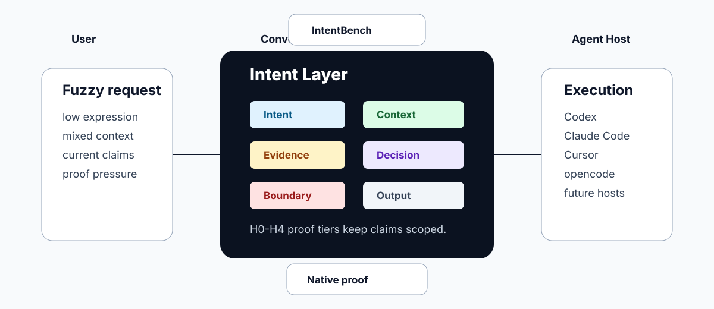

Intent
Reconstruct plausible true goals before choosing an output.
Agent Intent Layer
Make agents understand before they execute: a protocol, runtime, benchmark, and proof system for turning vague human work into scoped intent, inspected context, current evidence, host-realistic interaction, and bounded claims.

Protocol
Converge sits between user intent and host execution. It does not grant tools or bypass permissions; it makes the agent account for intent, context, evidence, decisions, output routing, and proof.
Reconstruct plausible true goals before choosing an output.
Inspect accessible files, links, screenshots, repos, and instruction-bearing artifacts.
Verify drift-prone claims and cite the sources or commands that support the route.
Give owner-mode recommendations, not neutral surveys or blank-page homework.
Use native interaction only when the active host actually exposes it.
Keep claims bounded by H0-H4 evidence instead of install paths or vibes.
Proof tiers
Static host or capability boundary is documented and covered by eval cases.
Installed copy or bridge matches canonical source.
Real response-eval passes in CLI, headless, or non-interactive mode.
Real host run uses the native question UI/tool correctly.
Multiple real tasks pass across files, tools, research, and editing.
IntentBench
IntentBench packages Converge eval cases into blind prompts, review packets, result stubs, and pass/fail scorecards by coverage axis. It deliberately avoids numeric quality scores.
python3 -m converge benchmark --validate
python3 -m converge benchmark --suite host --out /tmp/intentbench-host --with-result-stubs
python3 -m converge benchmark --results /tmp/intentbench-host/results --require-real-resultsBefore / after
This before/after gallery pairs a weak response pattern with the Converge response pattern and its proof boundary.
Source: gallery/examples.json
Install
git clone https://github.com/Zaoqu-Liu/converge-skill.git
cd converge-skill
python3 scripts/verify.py
python3 -m converge doctor --json
python3 -m converge install --targets all